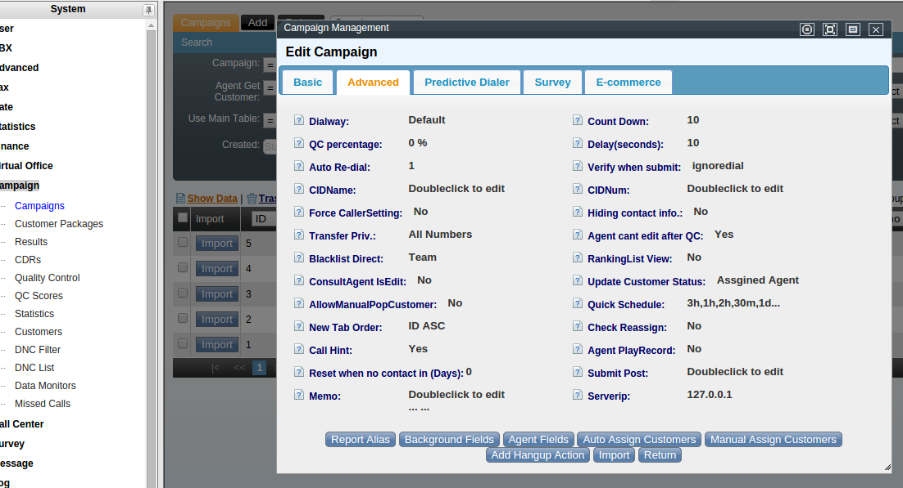
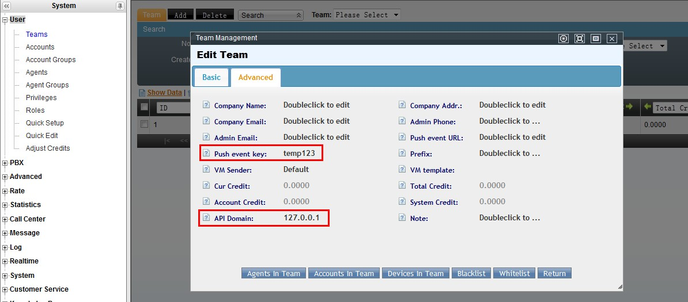
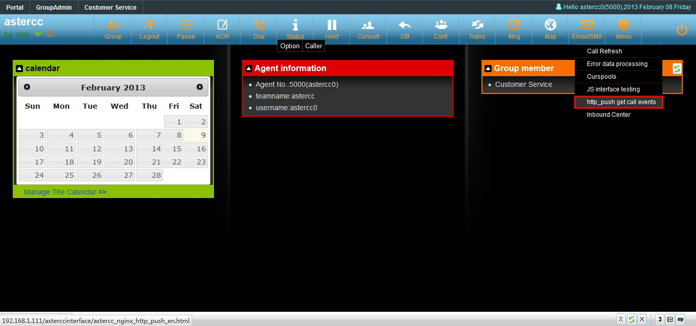
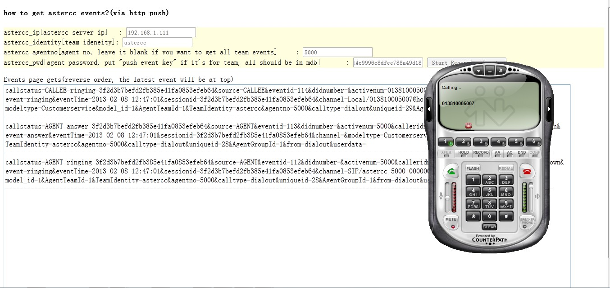
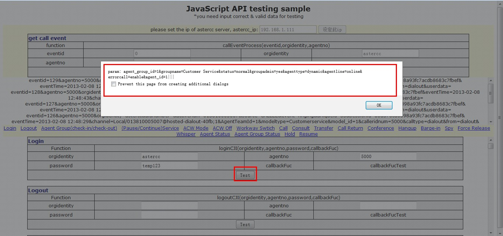

Recibir eventos en tiempo real de la API¶
Qué es¶
Además de invocar operaciones, un sistema externo casi siempre necesita enterarse de lo que pasa en una llamada (timbrado, respuesta, colgado) sin tener que preguntar constantemente. AsterCC ofrece dos mecanismos complementarios:
- Push hacia el navegador (
http_push): el sistema del agente en el navegador recibe cada evento en tiempo real, vía un script que AsterCC sirve. - Webhook hacia el backend ("后台接收事件"): AsterCC hace
POSTde cada evento a una URL configurada, para que un backend externo (por ejemplo, para generar su propio registro de llamadas o reenviar eventos a otro sistema) los reciba sin depender del navegador.
Ambos mecanismos entregan la misma información de evento, solo cambia el transporte.
Cómo se usa¶
Recepción en el navegador (http_push)¶
- Cargar el script del servidor de AsterCC:
<script src="http://<ip>:<puerto>/asterccinterface/astercc_nginx_http_push.js"></script>. - Definir la función
sonAccept(message)en la página — AsterCC la invoca automáticamente con cada evento nuevo:function sonAccept(message) { var aryMessage = message.split('&'); var aryEvent = {}; for (var i = 0; i < aryMessage.length; i++) { var tmp = aryMessage[i].split('='); aryEvent[tmp[0]] = tmp[1]; } // usar aryEvent[...] según el tipo de evento } - Para recibir los eventos de todo un equipo (no solo un agente), hay que configurar previamente, en el equipo, sección avanzada: la cadena de validación (la fuente en inglés la llama literalmente "Push event key") y la dirección de envío de eventos (
127.0.0.1si nginx corre en el mismo servidor que AsterCC), y luego reiniciar el proceso:service asterccd restart.
Recepción en el backend (webhook de eventos)¶
En la configuración avanzada del equipo, el campo "dirección de recepción de eventos" (etiquetado como "Push event URL" en la interfaz en inglés) activa el envío automático (POST) de cada evento hacia el programa receptor propio. Útil para construir el propio registro de llamadas (CDR) o reenviar eventos a otro sistema. Tras configurarlo, reiniciar el proceso: /etc/init.d/asterccd restart (la fuente en inglés usa esta forma del comando; la de prueba de http_push usa service asterccd restart — son dos formas equivalentes de reiniciar el mismo proceso).
Formato del evento (message)¶
En ambos mecanismos, el evento llega como una cadena clave=valor separada por &, por ejemplo:
calleridnum=041139735857&didnumber=8008008&activenum=041139735855&source=AGENT&event=ringing&uniqueid=78969&sessionid=efeb7b374a3408b0d0954f30a1504d83&eventTime=2010-01-01 08:21:58&AgentTeamId=20&modeltype=Campaign&model_id=10&AgentGroupId=100&calltype=dialout&channel=Local/015967121144@hosted-dialout-408a;1&from=dialout&
| Campo | Significado |
|---|---|
source |
Objeto que originó el evento: AGENT, CALLER (cliente que llama), CALLEE (cliente llamado), CONSULT (parte en consulta), CONVERSATION (la llamada completa). Siempre en mayúsculas. |
event |
Qué pasó: ringing, answer, hangup, join, incoming, onhold, resume. Siempre en minúsculas. |
calleridnum |
Número de teléfono del cliente |
activenum |
Número del source actual |
didnumber |
Número DID marcado (llamadas entrantes) |
eventTime |
Momento exacto del evento (evita imprecisiones por retraso del programa) |
sessionid |
Identificador único de la llamada completa — igual en todos los eventos de una misma llamada, y único en todo el sistema |
uniqueid |
Identificador único del canal del source dentro del sistema — se usa como parámetro en otras operaciones (ej. HANGUP) |
channel |
Canal de Asterisk del source |
from |
dialin (llamada entrante) o dialout (saliente) |
AgentTeamId / AgentGroupId |
Equipo / grupo de agentes al que pertenece el evento |
modeltype / model_id |
Módulo de negocio asociado (Campaign, Virtualcustomer, etc.) y su ID |
eventid |
ID incremental del evento — si un evento recibido tiene un eventid menor al último registrado, es un evento retrasado/pasado |
Flujo típico de una llamada saliente (ejemplos de eventos)¶
ringing del agente → answer del agente → ringing del cliente → answer del cliente → hangup del cliente o del agente → hangup de CONVERSATION (fin de la llamada completa).
Flujo típico de una llamada entrante¶
incoming de CALLER → ringing del agente → answer del agente → hangup de CALLER o del agente → hangup de CONVERSATION.
Construir un registro de llamadas propio (ejemplo de backend)¶
Patrón recomendado: al recibir ringing (llamada saliente) o incoming (llamada entrante), crear un registro nuevo si no existe uno con ese sessionid/diallogid (evita duplicados por reenvío de eventos); al recibir answer, actualizar el registro con la hora de respuesta; al recibir hangup, actualizar con la hora de fin. El campo source+event juntos describen el estado real de la llamada en cada momento.
Enviar datos de cierre de llamada de campaña a una URL propia ("Submit Post")¶
Mecanismo adicional, específico del módulo de campañas (marcación saliente), distinto del webhook general de eventos de llamada de arriba: en vez de reenviar eventos de timbrado/respuesta/colgado, AsterCC envía por POST los datos de cierre de gestión cuando el agente guarda el resultado de una llamada en la página emergente (pop-up) de campaña.
- Activar la función: como administrador, ir a Campaña → Campañas, abrir la campaña a editar, y en la pestaña Avanzado completar el campo "Submit Post" con una URL (ej.
http://192.168.2.88/api/message). Si el campo queda vacío, la función está deshabilitada. - Disparo del envío: cuando el agente guarda una gestión exitosa ("success customer") desde la página de campaña, AsterCC hace
POST(vía AJAX, formatoapplication/x-www-form-urlencoded, no JSON) a la URL configurada. - Datos enviados, combinación de metadatos de la gestión y de los campos visibles del cliente en la campaña (la clave es el nombre de columna en la base de datos):
| Campo | Contenido |
|---|---|
campaignId / customerId |
ID de la campaña / del cliente |
callresult |
Resultado de la llamada (fijado por el agente) |
memo |
Bitácora de la gestión (fijado por el agente) |
status |
Estado del cliente: open, pending, errorclosed, sucessclosed |
workorder_template_id / workorder_id |
Plantilla y ID de la orden de trabajo asociada, si aplica |
diallogid |
Identificador de la llamada (mismo concepto que sessionid en los eventos) |
curusephone |
Número de teléfono usado en la llamada |
quick_schedual / dialschedule / dialerpriority |
Programación de reintento (si status=pending) y prioridad de marcado |
agent_group_id |
Grupo de agentes del agente que gestionó la llamada |
resto de campos (customername, phone1, email, etc.) |
Solo los campos del cliente que estén configurados como visibles en la campaña |
- Respuesta esperada: el backend receptor debe permitir
POSTcross-domain (CORS) y devolver un JSON como{"code": 1, "msg": "success"}— si no responde así, el agente puede ver un error en el navegador aunque el envío haya funcionado.

Solo disponible en la fuente en inglés
Este mecanismo no aparece documentado en la fuente china leída para esta página — proviene exclusivamente de raw/en/custom_development_guide/how_to_post_customer_and_call_information_to_specific_url_in_campaign_model.txt. Se incluye aquí (en vez de en una página nueva) porque es, en esencia, otra variante del mismo patrón "AsterCC hace POST hacia mi URL" ya cubierto en esta página, aplicada a datos de cierre de campaña en vez de a eventos de llamada en tiempo real.
Aceptar eventos dentro del marco de AsterCC (agente embebido en B/S)¶
Cuando el agente inicia sesión directamente en la interfaz de AsterCC (no en un sistema externo independiente), y la aplicación de negocio corre embebida:
- Página de login del sistema de negocio: cada vez que AsterCC abre la dirección de trabajo del agente, hace un
POSTprevio con los datos de sesión:agentmsg_appid,agentmsg_appidentity,agentmsg_team_id,agentmsg_team_identity,agentmsg_agent_group_id,agentmsg_agentno,agentmsg_application_code(contraseña de la app, o el MD5 de la contraseña del usuario si no se configuró una específica),agentmsg_username,agentmsg_language. La página receptora debe leer este POST y completar el login hacia el sistema de negocio (ejemplo típico: un puente hacia SugarCRM). - Página de negocio: para recibir eventos de llamada sin salir del marco de AsterCC, se añade
sonAcceptHash(str)(función que AsterCC invoca con cada evento) y se referencia el scripthttp://<ip-astercc>/astercc_hash_event.js.
Depuración¶
Depurar la página de prueba de http_push¶
- Configurar en el equipo (menú Cuentas y permisos → Gestión de equipos, configuración avanzada): la cadena de validación (ej.
temp123) y la dirección de envío de eventos (127.0.0.1si nginx corre en el mismo servidor). Reiniciar:service asterccd restart.

- Con un agente con sesión iniciada y en cola, abrir Configuración → "http_push obtener eventos de llamada" en la plataforma del agente.

- Para obtener eventos de un solo agente, completar
astercc_ip(IP del servidor),astercc_identity(identificador del equipo),astercc_agentno(número de agente) yastercc_pwd(contraseña del agente en MD5 — ej. la contraseñatemp123en MD5 escca8dd8babd4c9996c8dfee788a49d18). - Para obtener los eventos de todo el equipo, no se indica número de agente, pero sí la cadena de validación (también en MD5).
- Iniciar la captura y originar una llamada desde el agente — los eventos deben aparecer en pantalla.

Probar la interfaz JavaScript (JS interface test)¶
Con un agente con sesión iniciada y en cola:
- Abrir Configuración → "Prueba de interfaz JS" en la plataforma del agente.
- Indicar la IP del servidor de AsterCC y pulsar "Fijar IP".
- Usar la sección de eventos para probar la recepción en vivo mientras el agente hace una llamada.
- Usar la sección de login (número y contraseña de agente) para probar las operaciones de la API de integración directamente desde esta página.

Se recomienda depurar primero la página de prueba de http_push antes de esta, ya que comparten los mismos conceptos de eventos.
Referencia rápida¶
| Necesito | Mecanismo |
|---|---|
| Que la pantalla del agente reaccione en tiempo real a un evento | http_push (script + sonAccept) |
| Que mi backend registre cada llamada sin depender del navegador | Webhook de eventos del equipo |
| Saber si un evento es de un agente, cliente o de la llamada completa | Campo source |
| Distinguir timbrado/respuesta/colgado | Campo event |
| Probar la recepción de eventos antes de integrar | Página de prueba http_push o "Prueba de interfaz JS" |
Fuentes¶
raw/zh/二次开发者指南/接口开发手册_v2.0/通话实时事件获取.txtraw/zh/二次开发者指南/接口开发手册_v2.0/后台接收事件.txtraw/zh/二次开发者指南/如何接受事件.txtraw/zh/二次开发者指南/如何调试http_push测试页面.txtraw/zh/二次开发者指南/如何进行js接口测试.txtraw/en/custom_development_guide/apis/receive_call_events_via_http_post.txtraw/en/custom_development_guide/how_to_use_http_push_sample_page_to_receive_system_events.txtraw/en/custom_development_guide/how_to_use_js_api_sample_page.txtraw/en/custom_development_guide/how_to_post_customer_and_call_information_to_specific_url_in_campaign_model.txt